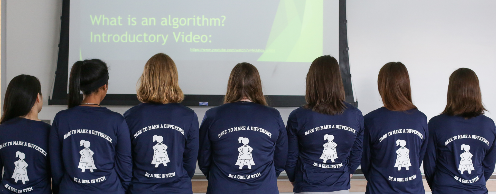

EXPLORE TECH
For 7th to 9th grade girls
This program gives our participants the opportunity to investigate specific topics in depth. Participants can choose one or both topics, to meet four or eight times per semester on School of Mines campus. Registration for our Fall 2017 program will open in August.
Girls can join us for exploration in EITHER Robotics (build and program the mBot), or Environmental Geoscience (study of the Earth's formations, events, and history), or BOTH!
- Topics: Robotics and Environmental Geoscience
- Time: 5:00-6:15
- Location: Colorado School of Mines campus
- Cost: $60 (4-week session of Robotics OR Environmental Geoscience)*
- OR $110 (8-week session of Robotics AND Environmental Geoscience)*
- *Includes a program t-shirt
Exploration in Robotics
Robots are improving our world, from helping the elderly to doing our mundane choirs. Come to this session of EXPLORE TECH and learn about the mBot and its exciting features (including sound and obstacle avoidance). Participants will engage in the entire engineering design process, beginning with building the robot, programming the mBot to complete specific challenges, and testing their designs.
Exploration in Environmental Geoscience
Earth. It’s a pretty neat place to live, but have you ever stopped to think about it? How come Earth has a climate, various geologic formations, and natural disasters? How do we understand Earth’s history when humans have only been around for a fraction of the time? How do we use the information we gather? Come to this session of EXPLORE TECH and discover the answers to these questions… after all, you do live here!
2017 Spring Session days/dates
- EXPLORE Robotics (choose ONE session):
- MONDAY session: January 30, February 13, March 13, April 17
- TUESDAY session: January 31, February 14, March 14, April 18
AND/OR
- EXPLORE Environmental Geoscience (choose ONE session):
- MONDAY session: February 6, February 27, March 20**, April 10
- TUESDAY session: February 7, February 28**, March 21, April 11
- **On Monday, March 20, and Tuesday, February 28, participants in Environmental Geoscience will take a tour of the National Ice Core Lab in the Denver Federal Center. Meeting time is 4:00 - 5:30pm ON THESE DATES ONLY.
For a printable flyer (pdf) about the current session of EXPLORE TECH, please click here.
Have questions? Please visit our FAQ page and find answers to popular questions.
Need more information? Please email us at stem-tech@mines.edu.
Financial scholarships available thanks to our sponsors